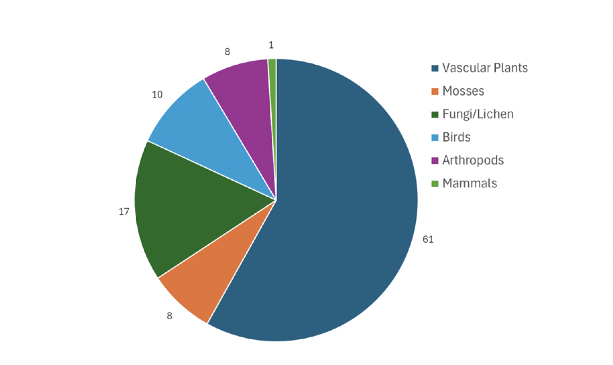

The project's purpose was to assess the impacts of climate change on species at risk and develop strategies for long-term land management and conservation. The project builds upon two previous phases that established baseline data on forest health and coastal community structures. Research on the possible impacts of climate change and conservation conflicts and options, took into consideration both local and regional climate projections in discussing possible conservation plans.

Figure 6. Distribution of species identified through field research by species group.
Based on the findings and in consultation with the property owners, the project team developed three key recommendations for the future management and conservation of Deadmans Head: 1) a "mixed management" zonal approach with selective habitat restoration in Zone 1 and the Zone 2 left largely to nature and future research, 2) partnering with cross-border land trusts for long-term land protection and preservation, and 3) ensuring the inclusion of Indigenous knowledge in future research and assessment. These recommendations account for the preferences of the property owners, the review of species at risk and conservation literature, field and climate change data collected during the project, and the expertise of various land conservation organizations. The proposed approaches aim to balance the goals of scientific research, habitat conservation, and long-term land stewardship.